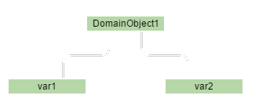
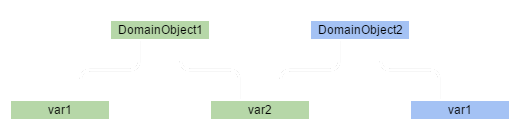

class: front-page # Datastrukturer --- class: agenda # Agenda * Intro * ## Hva er det? * ## Hvorfor har det noe å si? * # Persistente datastrukturer * ## Hva er det? * ## Hvorfor har det noe å si? * ## Hvordan fungerer det? ??? ### Intro Liten intro til vanlige datastrukturer, e.g. algdat 101. <br />Tar en kort recap av definisjon, og hvorfor vi burde bry oss om datastrukturer. ### Persistente datastrukturer Persistent og immutable datastrukturer er to konsepter som henger så tett sammen at jeg mest sannsynlig kommer til blande ordene hele tiden. Det jeg egentlig ville snakke om. <br />Hva er det egentlig, hvordan fungerer de, og hvilke fordeler har det å bruke? --- class: center middle # Intro --- # Intro - Definisjon *"A datastructure is way to store and organize data in order to facilitate access and modifications"* > Introduction to algorithms, Cormen et.al ??? Så, i følge Cormen (algdat boka) er datastrukturer en måte å lagre og organisere data på for å gjøre det lettere å hente ut og modifisere på dataene. Ikke mye spennende her. --- # Intro - Betyr det noe? ??? Men betyr det noe?? Og er det noe vi trenger å tenke på til vanlig? Til vanlig så jobber jeg ihvertfall med nokså trivielle greier "computation"-messig, at jeg vil påstå nei. Men som ett lite eksempel; la oss se på hvordan veldig små endringer i kode kan ha store konsekvenser for ytelse. --- class: cols two # Intro - Betyr det noe? .col[ ```java int sum = 0; for (int x = 0; x < xLength; x++) { for (int y = 0; y < yLength; y++) { sum += matrix[x][y]; } } return sum; ``` ] .col[ ```java int sum = 0; for (int y = 0; y < yLength; y++) { for (int x = 0; x < xLength; x++) { sum += matrix[x][y]; } } return sum; ``` ] ??? Veldig enkelt, vi har en matrise og skal finne summen av alle tallene i matrisen. Modelert med int[][] (int array of arrays), arrays i java er randomaccess og har konstanttid oppslag. Eneste forskjellen på kodesnuttene her om man itererer over rader først, eller kolonner... Hva tror vi er raskest? Burde det være forskjell? NB java. --- class: cols two # Intro - Betyr det noe? .col[ ```java int sum = 0; for (int x = 0; x < xLength; x++) { for (int y = 0; y < yLength; y++) { sum += matrix[x][y]; } } return sum; ``` Gjennomsnittlig kjøretid `259 646.67` ] .col[ ```java int sum = 0; for (int y = 0; y < yLength; y++) { for (int x = 0; x < xLength; x++) { sum += matrix[x][y]; } } return sum; ``` Gjennomsnittlig kjøretid `3 769 503.05` ] ??? ### Oppsummering eksempel Det er kanskje ett contrived eksempel, og sjeldent vi trenger å bry oss om sånt. Men det viser at selv små endringer i hvordan vi tar i bruk datastrukturer kan ha effekt på ytelse. I dette tilfelle en faktor av 10 i forskjell. Tidtagning: 6 x 100 gjennomkjørering for hver kodesnutt kjørt alternativt, e.g. sum1, sum2, sum1, sum2 etc ### List-apiet i java Forrige eksempel var veldig "low-level", e.g. det har med hvordan ting blir lagret og hentet fra RAMen. Men vi har f.eks List-apiet i java, med ArrayList og LinkedList som de mest brukte implementasjonene. I de fleste situasjoner er begge bra nok. Men hvis man alltid skal legge til elementer i starten av listen vil ArrayList være ekstremt dårlig, eller om man skal gjøre masse oppslag på random indekser så vil LinkedList være veldig dårlig. #### Implementering av stack/queue Samme om man skal raskt lage en Stack eller Queue implementasjon. Så kan ArrayList være ett dårlig valg for Queue om man ikke passer på hvordan man gjør det. ### Konklusjon Den underliggende datastrukturen og hvordan vi bruker de påvirker resten av applikasjonen vår, selvom den kanskje er abstrahert bort i noen språk. --- class: cols two # Intro - Datastrukturer ??? Så, la oss raskt ta en titt på hva som finnes der ute. --- class: cols two # Intro - Datastrukturer .col[ ## Datatyper * Primitive typer (bool, char, int, etc) * Composite typer (array, record, union etc) * Abstrakte data typer ( list, assoc array, set, bag, stack, queue, tree, graph) ] .col[ ## Datastrukturer * Lineære datastrukturer (array, matriser, buffer etc) * Lister (LinkedList, Doubly linkedlist, Arraylist, skiplist etc) * Binær trær (Binær tre, Pagoda, Red-Black tre, T-tre, B-tree B+-tree B*-tree etc) * Heap (Binær heap, Treap, Beap, Fibonacci heap etc) * Trær (Trie, Radix tree, Judy array, Merkel Tree, Ctrie etc) * Hashes (Bloom filter, HashList, HashTree, HashTable, Koorde), * Grafer (Nabolister, Nabomatriser, Multigraf, hypergraf) ] ??? Det finnes ett metric shitton av ulike datatyper og datastrukturer, og vi skal ikke gå gjennom alle. (Fordi jeg vet ikke hvordan halvparten av de fungerer) Men nå til det som egentlig var tiltenkt som hovedtema, immutable/persistente datastrukturer. --- # Persistente datastrukturer *"A datastructure that always preserves the previous version of itself when it is modified"* > Wikipedia, ??? Yes, det er Wikipedia om referanse. #noshame En persistent datastruktur er en datastruktur som "beholder" sin forrige versjon. Basicly, sånn som String i java. Effektivt sett blir de da også immutable, siden det er vanskelig å få til uten å alltid returnere et nytt objekt. Så hvordan kan det se ut? --- # Persistente datastrukturer - Java Ex ```java class DomainObject { public final String var1; public final String var2; public DomainObject(String var1, String var2) { this.var1 = var1; this.var2 = var2; } public DomainObject setVar1(String var1) { return new DomainObject(var1, this.var2); } public DomainObject setVar2(String var2) { return new DomainObject(this.var1, var2); } } ``` ??? Set-metoden gjør aldri endringer på orignal-objektet. Så det er jo da "beholdt". Denne er både immutable og persistent. (Så sant du ikke begynner å reflection n'shitz). Eksemplet har også structural-sharing (pga objekt-referanser), så String-en som ikke blir endret på blir ikke duplisert. --- # Persistente datastrukturer - Java Ex  ??? Når man starter ser det kanskje sånn ut... --- # Persistente datastrukturer - Java Ex  ??? Og når man kaller en av set-metodene ender man opp med dette. Merk at *DomainObject1* fortsatt er like fin og flott. Så, så lenge man bruker allerede immutable-objekter (e.g string) i domeneobjektet så er det ikke noe problem. Og derfor kan det bli en litt sånn "all-or-nothing" setting om man først skal starte med immutable datastrukturer. Men domeneobjektene våre er enkel. Så lenge alt er immutable alltid... Men hvordan håndtere allerede eksisterende datastrukturer? E.g. Lister og Maps --- # Persistente datastrukturer - Trie <p style="text-align: center"><img class="logo" src="./images/Trie_example.svg" alt="Logo"></p> ??? For å løse det kan vi se på en annen datastruktur, reTRIEve. Også kalt *radix tree*, det er DAG (directed acyclic graph). Som i dette tilfellet beskriver ett map med 8 keys (A:15, to:7, tea:3, ted:4, ten:12, i:11, in:5, inn:8), og på mange måter gir samme funksjonalitet som ett HashMap ville gjort i java. Og denne er kjempenyttig når vi skal se videre på persistente datastrukturer da det gjør det mulig å implementere noe som heter "structural sharing". E.g hvis du bare endrer på en liten av datastrukturen, så må du ikke kopiere over hele greia. Se https://youtu.be/I7IdS-PbEgI?t=307 --- # Persistente datastrukturer <iframe width="100%" height="500" src="https://www.youtube.com/embed/I7IdS-PbEgI?start=307&end=721" frameborder="0" allowfullscreen></iframe> --- # Persistente datastrukturer * Concurrency og multithreading * Memoisering ==> Bedre ytelse * Gjør ting enklere å resonnere rundt ??? * Concurrency og multithreading, ting kan ikke endre på seg så det er ikke noe risiko ved å dele på tvers av tråder * Memoisering ==> Bedre ytelse, alt kan memoiseres. Ref: Om (react-wrapper i closureScript) som faktisk er raskere enn plain react pga av dette. Finnes også flere benchmarks hvor apper med immutable.js og shouldComponentUpdate blir raskere enn plain react. * Gjør ting enklere å resonnere rundt, e.g global state og many mutators problemer Heldivis er det også raskt og effektivt, mye pga structural sharing. Konstant tid overhead med tanke på tid, log(N) overhead på minne men her fikser garbage collection biffen